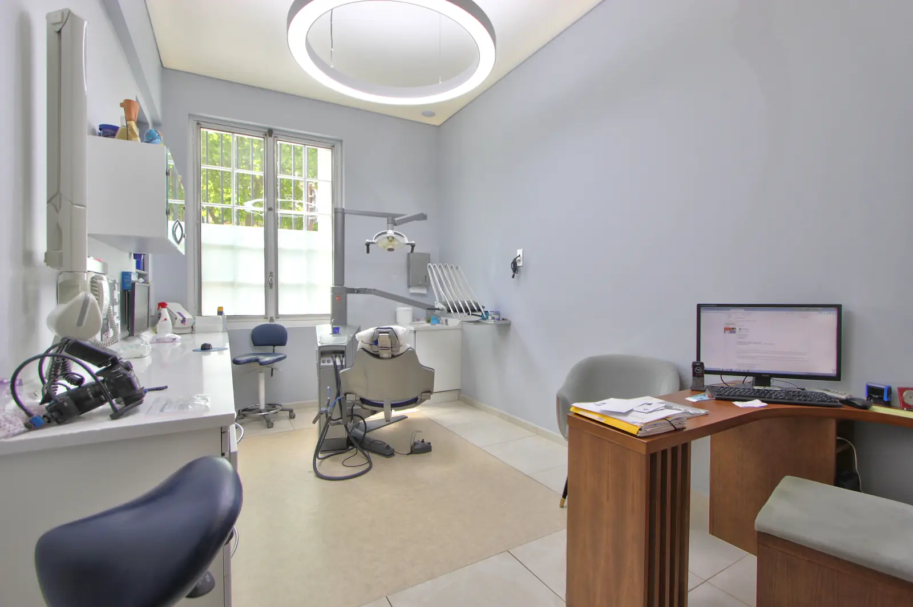

Ästhetische Prothetik
Kronen, Veneers, Brücken und Zahnersatz auf Implantaten: Sie geben den Zähnen Form, Funktion und natürliches Aussehen zurück.
Dr. Olivier Guinsbourg, Dr. Oliver HanischProthetik
Was ist Prothetik?
Die Prothetik stellt geschädigte Zähne wieder her und ersetzt fehlende Zähne.
Sie reicht von der Krone für einen einzelnen Zahn bis zur Versorgung eines ganzen Kiefers. Jede Versorgung wird so gestaltet, dass sie in Form, Farbe und Funktion zu den Nachbarzähnen passt.
Welche Versorgung passt zu welcher Situation?
Vier Lösungen, jede für eine bestimmte Situation. Welche für Sie infrage kommt, entscheiden wir nach der Untersuchung gemeinsam mit Ihnen.
- Typische Situation
- Ein stark zerstörter, abgebrochener oder wurzelbehandelter Zahn, dessen Wurzel gesund ist.
- Vorbereitung des Zahns
- Der Zahn wird rundherum beschliffen, damit die Krone Platz hat.
- Materialien
- Keramik auf einem Metallgerüst oder Vollkeramik wie Zirkonoxid oder Lithiumdisilikat.
- Termin
- In der Regel zwei bis drei Termine, dazwischen tragen Sie eine provisorische Krone.
Veneer
Eine dünne Keramikschale, die auf die sichtbare Vorderseite eines Zahns geklebt wird.
Alles über Veneers- Typische Situation
- Wenig geschädigte Frontzähne, bei denen Farbe, Form oder kleine Makel stören.
- Vorbereitung des Zahns
- Minimal: Abtrag von einigen Zehntelmillimetern Zahnschmelz, manchmal ist gar keiner nötig.
- Material
- Meist Keramik.
- Termin
- Mehrere Termine, darunter eine ästhetische Analyse und eine Einprobe im Mund.
Brücke
Ein oder mehrere künstliche Zähne, die von den Nachbarzähnen gehalten werden.
Alles über Brücken- Typische Situation
- Ein oder mehrere fehlende Zähne zwischen Zähnen, die selbst eine Krone benötigen.
- Vorbereitung der Zähne
- Die Nachbarzähne werden beschliffen, damit sie die Brücke tragen können.
- Materialien
- Dieselben wie bei einer Krone.
- Termin
- In der Regel zwei bis drei Termine.
Zahnersatz auf Implantaten
Ein oder mehrere Zähne, die auf Implantaten befestigt werden.
Alles über Zahnersatz auf Implantaten- Typische Situation
- Ein oder mehrere fehlende Zähne, wenn Implantate gesetzt werden können.
- Vorbereitung der Zähne
- Keine an den Nachbarzähnen: Zuerst werden die Implantate gesetzt.
- Materialien
- Keramik oder Kunststoff auf einem Gerüst aus Titan oder Zirkonoxid.
- Termin
- Nach der Einheilung der Implantate in der Regel zwei bis vier Termine.
Mehr erfahren
Jede Versorgungsart ausführlich erklärt.
- Keramikkronen Wann eine Krone notwendig ist, welche Materialien es gibt und wie sie eingesetzt wird. Mehr erfahren
- Veneers Farbe oder Form der Frontzähne korrigieren und dabei den Zahnschmelz schonen. Mehr erfahren
- Brücken Einen oder mehrere fehlende Zähne ersetzen, abgestützt auf die Nachbarzähne. Mehr erfahren
- Zahnersatz auf Implantaten Von der Einzelkrone bis zum festsitzenden Zahnersatz für einen ganzen Kiefer. Mehr erfahren

Ihre Zahnärzte
Dr. Olivier Guinsbourg
- Prothetik
Dr. Oliver Hanisch
- In Deutschland erworbener Titel als Spezialist für Prothetik
- Master of Science in Implantologie (USA)
Zahnersatz auf Implantaten wird geplant, bevor die Implantate gesetzt werden. So wird ihre Position auf den künftigen Zahn abgestimmt.
Häufige Fragen
Ist eine Keramikkrone belastbar?
Ja, wenn das Material auf den Zahn abgestimmt ist. Moderne Keramiken, insbesondere Zirkonoxid, halten den Kaukräften stand, auch im Backenzahnbereich.
Wird Zahnersatz erstattet?
Kronen und Brücken werden zum Teil von der französischen Krankenversicherung (Assurance maladie) übernommen. Je nach Material und Position des Zahns gehören manche zum Leistungskorb „100 % Santé“: Dann bleibt kein Eigenanteil, sofern Sie eine Zusatzversicherung (mutuelle) mit „contrat responsable“ haben. Die Implantate selbst werden nicht erstattet. Eine Krone auf einem Implantat wird nur begrenzt erstattet und fällt nicht unter 100 % Santé. Veneers dienen ästhetischen Zwecken und werden nicht übernommen. Vor jeder prothetischen Behandlung erhalten Sie einen detaillierten Kostenvoranschlag.
Wie lange hält eine Krone?
Gut gepflegt hält eine Krone in der Regel viele Jahre. Eine gute Mundhygiene und regelmäßige Kontrollen schützen auch den Zahn, der sie trägt.
Ein erster Termin zur Abklärung
Beim Beratungstermin untersucht der Zahnarzt Ihre Zähne, erklärt Ihnen die möglichen Lösungen und gibt Ihnen einen detaillierten Kostenvoranschlag mit.